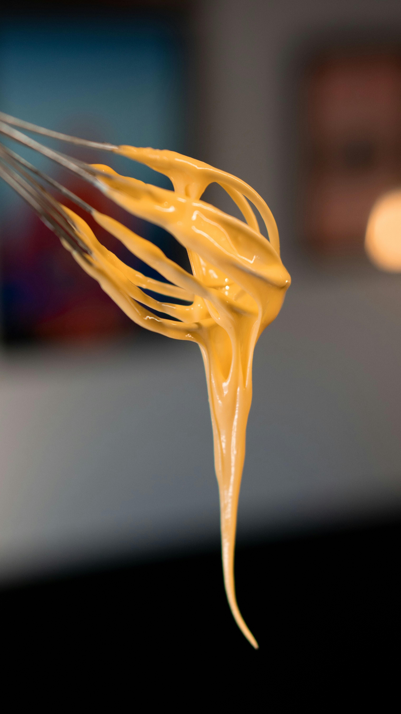

Simple Potato Salad

Simple Potato Salad Ingredients
These are the ingredients you'll need to create a simple, yet delicious potato salad by yourself:
- Eggs: You'll need two eggs, one boiled (see how to boil an egg) and
one raw. Depending on the size of the salad, you may need four or six. Keep in mind that you should always
have
an
even number of eggs.
- Cooking Oil: Used to mix the soft and hard yolks of'em eggs.
- Salt: We don't want to create a bland salad, do we?
- Boiled Potatoes: Saying you can make a "potato salad" without a potato is
the
same as saying you can fry an egg without an egg!
Steps:
- Extract both of the egg's yolks and put them in a plate or bowl.
- With very little oil, start pouring it on your plate or bowl, and then mix everything
with a fork. As the texture of the mayonnaise starts to become more consistent and slimy-like, you can
sparsely
increase the ammount of oil.
- After you're satisfied with the texture of your mayonnaise, add one or two pinches of salt
to it.
- Finally, have a bowl of boiled potatoes ready (see how
to
boil potatoes), and
then pour all of
your
mayonnaise on it. Mix your salad throughout the entire bowl so the mayonnaise doesn't get concentrated in a
single
spot.